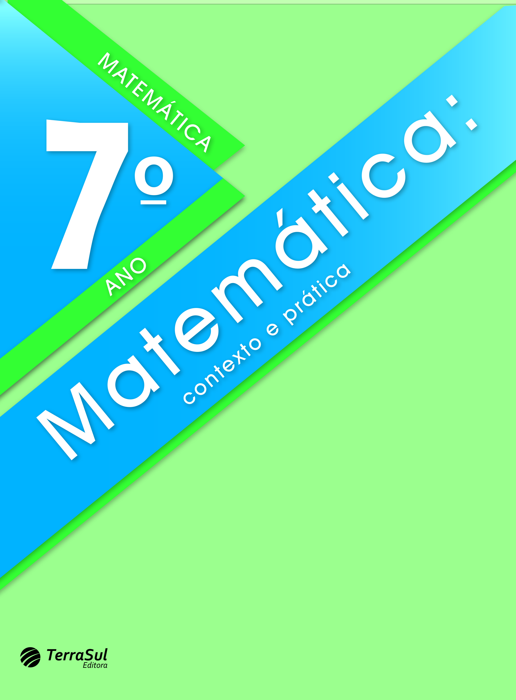

Matemática 7º ano
MANUAL DIGITAL-INTERATIVO DO PROFESSOR
► Cintia Bagatin Lapa
Licenciada em Matemática pela Universidade Federal do Paraná (UFPR). Mestre em engenharia de produção: Mídia e Conhecimento pela Universidade Federal de Santa Catarina (UFSC). Professora do Ensino Superior, tendo lecionado muitos anos nos ensinos Fundamental e Médio. Assessora editorial, prestando consultoria para diversas editoras na edição de conteúdo de matemática voltado para os ensinos Fundamental e Médio.
Curitiba, 2022 • 2.ª edição
©COPYRIGHT - 2022 - Terra Sul Editora Eireli. É proibida a reprodução, mesmo parcial, por qualquer processo eletrônico, reprográfico, etc., sem autorização por escrito da autora e da editora.
Dados internacionais de catalogação na publicação Bibliotecária responsável: Natália Vicente Montanha Teixeira (CRB-9/1642)
Lapa, Cintia Bagatin.
Matemática : contexto e prática : 7º ano : livro digital-interativo do estudante / Cintia Bagatin Lapa ; ilustradores : Reinaldo Rosa e Sérgio Bonfim dos Santos. – 2. ed. – Curitiba, PR : Terra Sul Editora, 2022.
296 p. : il. ; 28 cm.
ISBN 978-65-5645-198-5
1. Matemática (Ensino fundamental) – Estudo e ensino.
I. Rosa, Reinaldo. II. Santos, Sérgio Bonfim dos. III. Título.
CDD (22ª ed.)
372.7
COORDENAÇÃO EDITORIAL
Jane Gonçalves
REVISÃO
Ariane Roldan Melchior
Eliane Peixoto de Lima
Silmara Lídia Moraes Arcoverde
Sônia Maria Duarte
Thais dos Santos Pires
ILUSTRAÇÃO
Reinaldo Rosa
Sérgio Bonfim dos Santos
EDITORAÇÃO ELETRÔNICA
Márcio Guesser
CONSULTORIA
Ana Paula Gugelmin
CARTOGRAFIA
Elisabeth Gislaine Rathunde Lopes
ICONOGRAFIA
Raquel Deliberali
Victor Kubis
IMPRESSÃO
Rua Ricardo Beltrami, 82 • Bom Retiro
CEP 80520-570 • Curitiba • PR • Brasil
Fone/Fax: (41) 3253-0077
E-mail: terrasul@terrasuleditora.com.br
Apresentação
Prezado aluno,
Esta coleção foi escrita para auxiliá-lo a descobrir como a Matemática pode ser signifi cativa e também prazerosa no seu dia a dia.
Trata-se de uma ciência que nos ajuda a desenvolver o raciocínio e a fazer descobertas, levando-nos a entender melhor o mundo em que vivemos.
Pensando em atender suas expectativas e curiosidades, convido-o a participar desta aventura, para que você possa ampliar o seu conhecimento sobre os números, as operações, as formas geométricas, as medidas e tantas outras informações que encontrará nas páginas deste livro.
Atente-se às orientações do seu professor, concentre-se nas aulas e resolva as atividades. Dessa forma, você perce-berá o quão gratifi cante é o aprender!
Bom estudo!
A autora
Conheça as seções do livro do aluno
Converse
Na abertura das unidades apresentamos tex- tos e imagens que remetem aos assuntos que serão estudados. Convidamos você a conversar um pouco sobre estes temas para saber qual o seu conhecimento prévio sobre os conceitos que serão estudados.
Encontre soluções
Nesta seção serão apresentadas atividades variadas para serem resolvidas e jogos sobre os conceitos que estão sendo estudados.
Probabilidade e estatística
Esta seção trata da interpretação e análise de dados em várias formas de apresentação, como gráficos e tabelas.
Relembre
Seção que finaliza a unidade. Nesta seção, você poderá verificar, por meio de atividades, se os conceitos estudados na unidade foram assimilados.

Glossário
Encontra-se no final do livro e contém vocábulos que podem ser desconhecidos, com as suas significações no contexto estudado. Essas palavras encontram-se sublinhadas no de- correr do livro.
Conheça os ícones

Troca de ideias
Neste ícone você será convidado a trocar ideias com seus colegas e professor sobre questões que estão sendo propostas no início do estudo de um determinado conceito. Neste momento, é possível criar estratégias próprias ou utilizar as convencionais, desenvolven- do a imaginação, a criatividade e a capacidade de comunicar clara- mente suas conclusões; fazer estimativas mentais de resultados ou cálculos aproximados.

Em duplas
São atividades que apresentam situações nas quais se propõe que sejam resolvidas em duplas.

Calculadora
São apresentadas situações em que se sugere que o cálculo seja realizado mentalmente.

Calcule mentalmente
São apresentadas situações em que se sugere que o cálculo seja realizado mentalmente.

Desafio
Neste ícone você encontrará atividades da Olimpíada Brasileira de Matemática, podendo ser da OBMEP – Olimpíada Brasileira de Ma- temática das Escolas Públicas ou da OBM – Olimpíada Brasileira de Matemática.

Jogos
Este ícone indica que é um momento para jogar. Por meio do jogo, pretende-se o desenvolvimento simultâneo da capacidade cognitiva, de raciocínio, de memória, entre outras, e você aprende brincando. Convide um colega e bom divertimento!